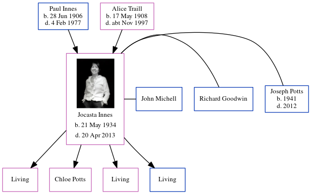

Alice Eileen Innes (née Traill) 1908 - c1997
[ Home ] | [ Calendar ] | [ Surnames Index ] | [ Errors ] | [ Family History ]Alice Traill, the wife of Paul Joseph Anthony Innes (the second cousin once-removed on the father's side of Nigel Horne), was born in Newbury, Berkshire, England on 17 May 19081,2 and married Paul (with whom she had 1 child, Jocasta Claire Traill) in Bedford, Bedfordshire, England around Aug 19333.
She died c. Nov 1997 in Chelmsford, Essex, England2.
Children
- Jocasta Claire Traill was born on 21 May 1934
Citations
- England & Wales births 1837-2006 - Findmypast
- England & Wales deaths 1837-2007 - Findmypast
- England & Wales Marriages 1837-2005 - Findmypast
Media
England & Wales marriages 1837-2005 - BMD/M/1933/3/AZ/001474/006
England & Wales births 1837-2006 - BMD/B/1908/2/AZ/000625/244
England & Wales deaths 1837-2007 - BMD/D/1997/11/82003345
Family Tree
Map
Generated by ged2site. Last updated on Jul 3, 2024
Known Issues
No records of living with anyone
1939 UK register information missing